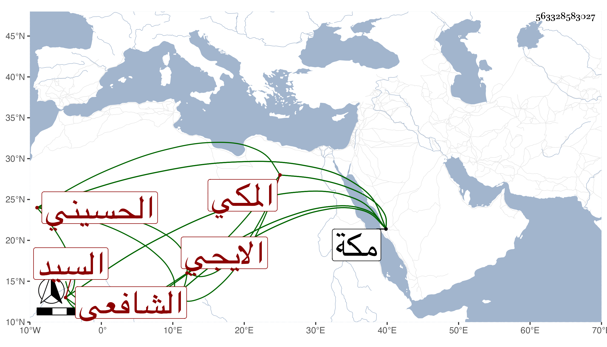

0902Sakhawi.DawLamic.ITO20230111-ara1.EIS1600.563328583027
Biography ID: 563328583027
إبراهيم بن عبيد الله بن محمد بن محمد بن محمد بن عبد الله بن محمد بن عبد الله ابن هادي الولد السيد جمال الدين بن العلامة النور بن العارف العلاء بن العفيف الحسيني الايجي الأصل المكي الشافعي أخو حبيب الله وعبد الرحمن ومحمد الآتي كل منهم ويعرف كأبيه وجده بابن السيد عفيف الدين . ولد في ثالث عشري جمادى الأولى سنة أربع وثمانين وثمانمائة بمكة وأمه أم ولد حضر إلي مع أبيه وهو في الثالثة سنة ست وثمانين في تلك المجاورة فحدثتهما بالمسلسل ونشأ فدر به زوج أمه ملا على البخاري في قراءة القرآن وفي النحو بالعوامل والكافية وفي الصرف بتصريف العزى ولما كنت في سنة ثلاث وتسعين بمكة أحضره إلي فقرأ أربعي النووي ثم ثلاثيات البخاري بل سمع علي أصل الصحيح والشمائل بكمالهما والابتهاج بأذكار المسافر الحاج وغنية المحتاج في ختم صحيح مسلم ابن الحجاج والقول النافع في ختم الصحيح الجامع ثلاثتهما من تأليفي وقابل بحضرتي نسخة من أولها وهو فطن لبيب يمسك حين سماعه نسخة معه فيحسن الإمساك مع أدب وتربية بورك فيه ثم سافر مع أبيه متعلقا به من أمه وسافرت مع زوجها لجهة أخرى .
